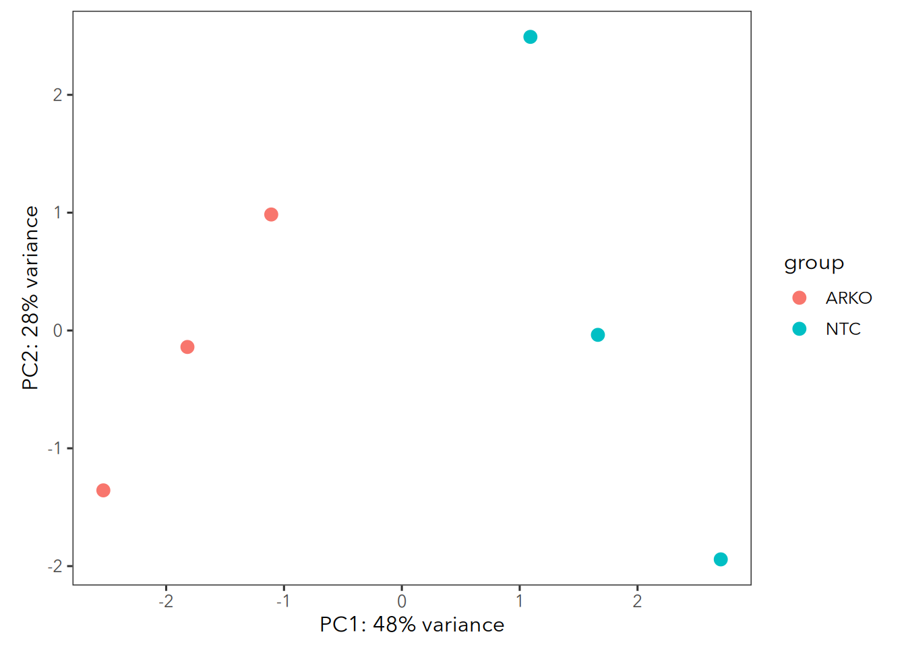
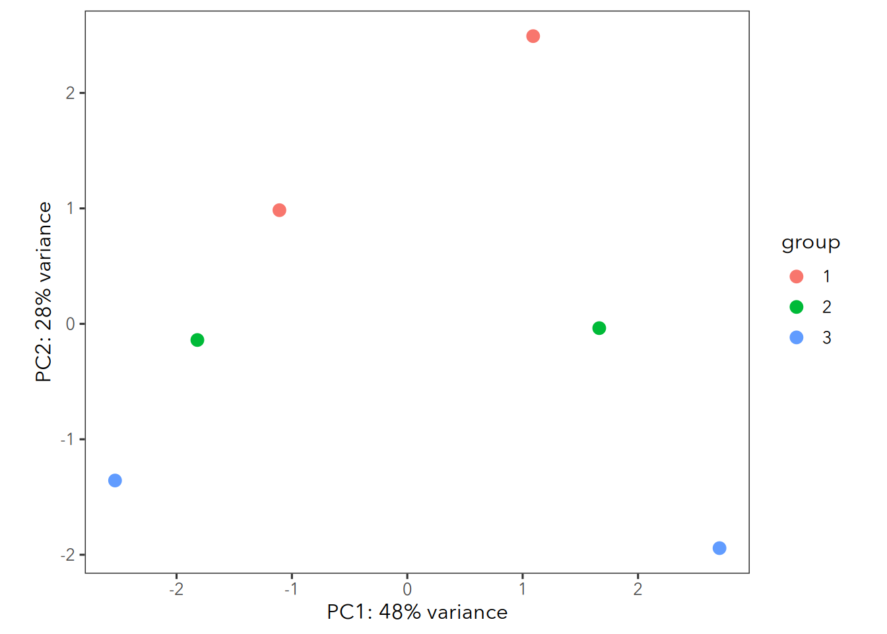

suppressPackageStartupMessages({
library(ggplot2)
library(DESeq2)
})
# Set a custom theme for the plots, not requiered, but it looks better
theme_max <- function(base_size = 12, base_family="Avenir Next"){
theme_bw(base_size = base_size, base_family = base_family) %+replace% #replace elements we want to change
theme(
panel.grid = element_blank(),
strip.background = element_rect(fill = "#EEEEEE", colour = NA)
)
}
theme_set(theme_max())
# Setup the dds object
# Import the summarized Experiment
gse <- readRDS("salmon.merged.gene_counts.rds")
# Lets remove the replicate from the sample name
# we will use this for the desgin in DESeq2
gse$condition <- sub("_.*", "",gse$names)
gse$replicate <- sub(".*_", "",gse$names)
# Some 'count' have small rounding errors (eg 10.0001)
# We need to convert that to integers for DESeq2
assay(gse, 'counts') <- as.matrix(round(assay(gse, 'counts')))
# Create the DESeq2 dataset.
dds <- DESeqDataSet(gse, ~condition)
dds <- DESeq(dds)Download and align RNA Seq files
This tutorial shows you how to download and align RNA Seq data from GEO using the Nextflow pipelines. All you need to have is a installation on conda/mamba.
Create a nextflow conda environment
If you already have a working conda installation, you can create a new environment with the following command: mamba create -n nextflow nextflow -c bioconda. Note that if you are using conda instead of the much faster mamba package manager, you need to repace mamba with conda. To activate the environment run conda activate nextflow.
Downlod the RNA Seq data: fastq files
Nextflow provides a pipeline that automatically download the data from GEO: https://nf-co.re/fetchngs. In this example, we will download files from GSE198874. On the bottom of that page, you can see a link SRA Run Selector. Click on that. On the next page click on Accession List to download the file. Save it! Next, on you computer (I use TSCC), create a directory for you project. e.g. mkdir MY_EXCITING_PROJECT && cd MY_EXCITING_PROJECT. Within that, create a folder where we download the fastq files. E.g. mkdir 01_download_fastq. To run nextflow on the TSCC, we need to create a config file to tell the programm which queues to use. Eg home-yeo or condo. Create a file using vim called nextflow.config with the following content:
process {
executor = 'pbs'
queue = 'home-yeo'
}
singularity.cacheDir = '/home/mheeg/scratch/nextflow/singularity'The singularity.cacheDir is optional.
Let’s start the pipeline and download the files:
# activate the conda environment
conda activate nextflow
# start the pipeline
nextflow run nf-core/fetchngs\
--input 01_download_fastq/SRR_Acc_List.txt\
--outdir 01_download_fastq\
-profile singularityDepending on the number of samples and the internet speed, this might take a while.
Align the samples using the nextflow pipeline
Using the fastq files, we can run the rnaseq pipeline to align the samples. Let’s create a new subfolder for that anaylsis: mkdir 02_RNA-Seq. Within that folder, we need to create a samplesheet. Luckily, we can start by copying a template from the fetchngs pipeline that we ran above: cp 01_download_fastq/samplesheet/samplesheet.csv 02_RNA-Seq/ Use your favorite editor (vim, what else?) to modify the file: It needs four columns: sample, fastq_1, fastq_2, and strandedness. After editing it, mine looked as follows:
sample,fastq_1,fastq_2,strandedness
ARKO 1,01_download_fastq/fastq/SRX14493513_SRR18358797_1.fastq.gz,01_download_fastq/fastq/SRX14493513_SRR18358797_2.fastq.gz,auto
ARKO 2,01_download_fastq/fastq/SRX14493514_SRR18358796_1.fastq.gz,01_download_fastq/fastq/SRX14493514_SRR18358796_2.fastq.gz,auto
ARKO 3,01_download_fastq/fastq/SRX14493515_SRR18358795_1.fastq.gz,01_download_fastq/fastq/SRX14493515_SRR18358795_2.fastq.gz,auto
NTC 1,01_download_fastq/fastq/SRX14493516_SRR18358794_1.fastq.gz,01_download_fastq/fastq/SRX14493516_SRR18358794_2.fastq.gz,auto
NTC 2,01_download_fastq/fastq/SRX14493517_SRR18358793_1.fastq.gz,01_download_fastq/fastq/SRX14493517_SRR18358793_2.fastq.gz,auto
NTC 3,01_download_fastq/fastq/SRX14493518_SRR18358792_1.fastq.gz,01_download_fastq/fastq/SRX14493518_SRR18358792_2.fastq.gz,autoNext, we can run the pipeline. This performs QC, trimming and alignment. Make sure that you have the nextflow conda environment still activated.
nextflow run nf-core/rnaseq \
--input 02_RNA-Seq/samplesheet.csv\
--genome GRCm38\
-profile singularity\
--igenomes_base /home/mheeg/projects/igenomes/\
--outdir 02_RNA-Seq -resumeThe --igenomes_base is optional, but it is a lot faster if you don’t need to download the genome every time. Once this is done, we can import the counts into DESeq2.
Basic analysis in DESeq2
Importing the data into R is quite easy. One of the outputs of the pipeline is an rds file with the counts data. The file can be found in the follwoing location: ./02_RNA-Seq/star_salmon/salmon.merged.gene_counts.rds. For the analysis, you don’t need to use the supercomputer anymore. Any laptop should be fast enough. So copy that file to your computer. We can then import that, make some minor adjustments and finally run DESeq2.
PCA plots
vsd <- vst(dds, blind = FALSE)
plotPCA(vsd, intgroup="condition") + theme_max()
plotPCA(vsd, intgroup="replicate") + theme_max()

DE-genes
res <- results(dds, saveCols = "gene_name")
knitr::kable(head(res[order(res$padj),], 20))| baseMean | log2FoldChange | lfcSE | stat | pvalue | padj | gene_name | |
|---|---|---|---|---|---|---|---|
| ENSMUSG00000079363 | 18855.0883 | -0.4115697 | 0.0443681 | -9.276250 | 0 | 0 | Gbp4 |
| ENSMUSG00000073102 | 1256.7135 | -0.7107663 | 0.0797868 | -8.908315 | 0 | 0 | Drc1 |
| ENSMUSG00000030410 | 4098.3367 | 0.3809353 | 0.0434739 | 8.762385 | 0 | 0 | Dmwd |
| ENSMUSG00000052837 | 23565.5152 | 0.3482253 | 0.0405979 | 8.577418 | 0 | 0 | Junb |
| ENSMUSG00000033826 | 1945.7173 | -0.5075080 | 0.0611673 | -8.297054 | 0 | 0 | Dnah8 |
| ENSMUSG00000027347 | 17486.7770 | -0.2340036 | 0.0283352 | -8.258395 | 0 | 0 | Rasgrp1 |
| ENSMUSG00000029075 | 16853.7376 | 0.3954691 | 0.0481976 | 8.205162 | 0 | 0 | Tnfrsf4 |
| ENSMUSG00000041046 | 837.2067 | 0.7512455 | 0.0937936 | 8.009562 | 0 | 0 | Ramp3 |
| ENSMUSG00000045868 | 35962.5007 | -0.2270765 | 0.0288059 | -7.882997 | 0 | 0 | Gvin1 |
| ENSMUSG00000030124 | 14967.5134 | 0.2682068 | 0.0343098 | 7.817209 | 0 | 0 | Lag3 |
| ENSMUSG00000078606 | 24047.8567 | -0.2634523 | 0.0338521 | -7.782451 | 0 | 0 | Gm4070 |
| ENSMUSG00000030122 | 5513.0997 | 0.2833926 | 0.0365790 | 7.747407 | 0 | 0 | Ptms |
| ENSMUSG00000033307 | 54216.1515 | 0.2460016 | 0.0317937 | 7.737444 | 0 | 0 | Mif |
| ENSMUSG00000031004 | 119475.3161 | -0.2293939 | 0.0297246 | -7.717308 | 0 | 0 | Mki67 |
| ENSMUSG00000069939 | 584.2585 | 0.9421127 | 0.1225574 | 7.687112 | 0 | 0 | Gm12070 |
| ENSMUSG00000054072 | 8343.3257 | -0.3595712 | 0.0468585 | -7.673551 | 0 | 0 | Iigp1 |
| ENSMUSG00000030854 | 6915.9286 | 0.3035410 | 0.0399550 | 7.597069 | 0 | 0 | Ptpn5 |
| ENSMUSG00000037411 | 3710.6073 | 0.3743609 | 0.0495938 | 7.548541 | 0 | 0 | Serpine1 |
| ENSMUSG00000104713 | 10992.2583 | -0.3842630 | 0.0514822 | -7.464002 | 0 | 0 | Gbp6 |
| ENSMUSG00000059195 | 1580.1268 | 0.5401323 | 0.0731915 | 7.379716 | 0 | 0 | Gm12715 |
Read Introduction to DESeq2 for more information about RNA Seq analysis.